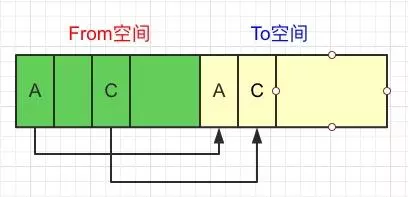

v8引擎垃圾回收机制
为什么要有垃圾回收
在 C/C++ 语言中，我们如果想要开辟一块堆内存的话，需要先计算需要内存的大小，然后自己通过malloc函数去手动分配，在用完之后，还要时刻记得用free函数去清理释放，否则这块内存就会被永久占用，造成内存泄露
但是在写 js 时，却没有这个过程，v8引擎会根据你当前定义对象的大小去自动申请分配内存，不需要我们去手动管理内存了，所以自然要有垃圾回收，否则的话只分配不回收，很快内存就会被占满，导致应用崩溃
垃圾回收的好处是不需要我们去管理内存，把更多的精力放在实现复杂应用上，但坏处也来自于此，不用管理了，就有可能在写代码的时候不注意，造成循环引用等情况，导致内存泄露
内存结构分配
由于 v8 最开始就是为 JavaScript 在浏览器执行而打造的，不太可能遇到使用大量内存的场景，所以它可以申请的最大内存就没有设置太大
在 NodeJS 环境中，我们可以通过process.memoryUsage()来查看内存分配
1 | $ node |
process.memoryUsage会返回一个对象，包含了 Node 进程的内存占用信息，该对象包含四个字段：
rss（resident set size）：所有内存占用，包括指令区和堆栈
heapTotal：v8引擎可以分配的最大堆内存，包含下面的 heapUsed
heapUsed：v8引擎已经分配使用的堆内存
external： v8管理C++对象绑定到JavaScript对象上的内存
如何判断是否可以回收
标记清除
当变量进入环境（例如，在函数中声明一个变量）时，就将这个变量标记为“进入环境”；从逻辑上讲，永远不能释放进入环境的变量所占用的内存，因为只要执行流进入相应的环境，就可能会用到它们。而当变量离开环境时，则将其标记为“离开环境”
可以使用任何方式来标记变量。比如，可以通过翻转某个特殊的位来记录一个变量何时进入环境，或者使用一个“进入环境的”变量列表及一个“离开环境的”变量列表来跟踪哪个变量发生了变化。如何标记变量并不重要，关键在于采取什么策略
垃圾收集器在运行的时候会给存储在内存中的所有变量都加上标记（当然，可以使用任何标记方式）
它会去掉运行环境中的变量以及被环境中变量所引用的变量的标记
依然有标记的变量就被视为准备删除的变量，原因是在运行环境中已经无法访问到这些变量了。
垃圾收集器完成内存清除工作，销毁那些带标记的值并回收它们所占用的内存空间。
目前，IE、Firefox、Opera、Chrome和Safari的JavaScript实现使用的都是标记清除式的垃圾回收策略（或类似的策略），只不过垃圾收集的时间间隔互有不同。
引用计数
引用计数的垃圾收集策略不太常见。含义是跟踪记录每个值被引用的次数。当声明了一个变量并将一个引用类型值赋给该变量时，则这个值的引用次数就是1
如果同一个值又被赋给另一个变量，则该值的引用次数加1。相反，如果包含对这个值引用的变量改变了引用对象，则该值引用次数减1
当这个值的引用次数变成0时，则说明没有办法再访问这个值了，因而就可以将其占用的内存空间回收回来
这样，当垃圾收集器下次再运行时，它就会释放那些引用次数为0的值所占用的内存
Netscape Navigator 3.0是最早使用引用计数策略的浏览器，但很快它就遇到了一个严重的问题：循环引用。循环引用是指对象A中包含一个指向对象B的指针，而对象B中也包含一个指向对象A的引用，看个例子：
1 | function foo () { |
这个例子中，objA和objB通过各自的属性相互引用，也就是说，这两个对象的引用次数都是2
在采用标记清除策略的实现中，由于函数执行后，这两个对象都离开了作用域，因此这种相互引用不是问题，但在采用引用次数策略的实现中，当函数执行完毕后，objA和objB还将继续存在，因为它们的引用次数永远不会是0
假如这个函数被重复多次调用，就会导致大量内存无法回收。为此，Netscape在Navigator 4.0中也放弃了引用计数方式，转而采用标记清除来实现其垃圾回收机制
还要注意的是，我们大部分人时刻都在写着循环引用的代码，看下面这个例子，相信大家都这样写过
1 | var el = document.getElementById('#el'); |
我们为一个元素的点击事件绑定了一个匿名函数，我们通过event参数是可以拿到相应元素el的信息的。
大家想想，这是不是就是一个循环引用呢？el有一个属性onclick引用了一个函数（其实也是个对象），函数里面的参数又引用了el，这样el的引用次数一直是2，即使当前这个页面关闭了，也无法进行垃圾回收。
如果这样的写法很多很多，就会造成内存泄露。我们可以通过在页面卸载时清除事件引用，这样就可以被回收了：
1 | var el = document.getElementById('#el'); |
v8垃圾回收策略
自动垃圾回收有很多算法，由于不同对象的生存周期不同，所以无法只用一种回收策略来解决问题，这样效率会很低，而 v8 的垃圾回收策略基于一个假设 —— The Generational Hypothesis：大部分对象存活的时间很短。所以，v8采用了一种代回收的策略，将内存分为两个生代：
新生代（new generation）：存放存活时间较短的对象
老生代（old generation）：存放存活时间较长或常驻内存的对象
分别对新老生代采用不同的垃圾回收算法来提高效率，对象最开始都会先被分配到新生代（如果新生代内存空间不够，直接分配到老生代），新生代中的对象会在满足某些条件后，被移动到老生代，这个过程也叫晋升
默认情况下，32位系统新生代内存大小为 16MB，老生代内存大小为 700MB，64位系统下，新生代内存大小为 32MB，老生代内存大小为 1.4GB
新生代
分配方式
新生代存的都是生存周期短的对象，分配内存也很容易，只保存一个指向内存空间的指针，根据分配对象的大小递增指针就可以了，当存储空间快要满时，就进行一次垃圾回收
新生代平均分成两块相等的内存空间，叫做 semispace，每块内存大小 8MB（32位）或 16MB（64位）
算法
新生代采用 Scavenge 垃圾回收算法，将内存一分为二，叫做 semispace，一块处于使用状态，一块处于闲置状态，处于使用状态的 semispace 称为 From 空间，处于闲置状态的 semispace 称为 To 空间
一次新生代流程要经过以下几个步骤：
在 From 空间中分配了 3 个对象 A、B、C
GC 判断对象 B 没有其他引用，可以回收，对象 A 和 C 依然为活跃对象

将活跃对象 A、C 从 From 空间复制到 To 空间

清空 From 空间的全部内存
交换 From 空间和 To 空间

在 From 空间中又新增了2个对象 D、E
下一轮 GC 发现对象 D 没有引用了，做标记
将活跃对象 A、C、E 从 From 空间复制到 To 空间
清空 From 空间全部内存
清空 From 空间全部内存
通过上面的步骤，可以很清楚的看到，进行 From 和 To 交换，就是为了让活跃对象始终保持在一块 semispace 中，另一块 semispace 始终保持空闲的状态
Scavenge由于只复制存活的对象，并且对于生命周期短的场景存活对象只占少部分，所以它在时间效率上有优异的体现。Scavenge的缺点是只能使用堆内存的一半，这是由划分空间和复制机制所决定的
由于Scavenge是典型的牺牲空间换取时间的算法，所以无法大规模的应用到所有的垃圾回收中。但我们可以看到，Scavenge非常适合应用在新生代中，因为新生代中对象的生命周期较短，恰恰适合这个算法
晋升
当一个对象经过多次复制仍然存活时，它就会被认为是生命周期较长的对象。这种较长生命周期的对象随后会被移动到老生代中，采用新的算法进行管理，对象从新生代移动到老生代的过程叫作晋升。
对象晋升的条件主要有两个：
对象从From空间复制到To空间时，会检查它的内存地址来判断这个对象是否已经经历过一次 Scavenge 回收。如果已经经历过了，会将该对象从From空间移动到老生代空间中，如果没有，则复制到To空间。总结来说，如果一个对象是第二次经历从From空间复制到To空间，那么这个对象会被移动到老生代中。
当要从From空间复制一个对象到To空间时，如果To空间已经使用了超过25%，则这个对象直接晋升到老生代中。设置25%这个阈值的原因是当这次Scavenge回收完成后，这个To空间会变为From空间，接下来的内存分配将在这个空间中进行。如果占比过高，会影响后续的内存分配
老生代
在老生代中，存活对象占较大比重，如果继续采用Scavenge算法进行管理，就会存在两个问题：
由于存活对象较多，复制存活对象的效率会很低
采用Scavenge算法会浪费一半内存，由于老生代所占堆内存远大于新生代，所以浪费会很严重
所以，v8在老生代中主要采用了 Mark-Sweep 和 Mark-Compact 相结合的方式进行垃圾回收
标记清除（sweeping）
Mark-Sweep 分为标记和清除两个阶段
与 Scavenge 不同，Mark-Sweep 并不会将内存分为两份，所以不存在浪费一半空间的行为。Mark-Sweep 在标记阶段遍历堆内存中的所有对象，并标记活着的对象，在随后的清除阶段，只清除没有被标记的对象
也就是说， Scavenge 只复制活着的对象，而 Mark-Sweep 只清除死了的对象。活对象在新生代中只占较少部分，死对象在老生代中只占较少部分，这就是两种回收方式都能高效处理的原因
Mark-Sweep 的步骤如下：
老生代中有对象 A、B、C、D、E、F
GC 进入标记阶段，将 A、C、E 标记为存活对象
GC 进入清除阶段，回收掉死亡的 B、D、F 对象所占用的内存空间

可以看到，Mark-Sweep 最大的问题就是，在进行一次清除回收以后，内存空间会出现不连续的状态。这种内存碎片会对后续的内存分配造成问题
如果出现需要分配一个大内存的情况，由于剩余的碎片空间不足以完成此次分配，就会提前触发垃圾回收，而这次回收是不必要的
Mark-Compact
为了解决Mark-Sweep的内存碎片问题，Mark-Compact 就被提出来了
Mark-Compact 是在 Mark-Sweep 的基础上演变而来的。Mark-Compact在标记完存活对象以后，会将活着的对象向内存空间的一端移动，移动完成后，直接清理掉边界外的所有内存。如下图所示：
老生代中有对象 A、B、C、D、E、F
GC 进入标记阶段，将 A、C、E 标记为存活对象
GC 进入整理阶段，将所有存活对象向内存空间的一侧移动，灰色部分为移动后空出来的空间
GC 进入清除阶段，将边界另一侧的内存一次性全部回收

在 v8 的回收策略中，Mark-Sweep 和 Mark-Conpact 两者是结合使用的，由于 Mark-Conpact 需要移动对象，所以它的执行速度不可能很快，在取舍上，v8 主要使用 Mark-Sweep，在空间不足以对从新生代中晋升过来的对象进行分配时，才使用 Mark-Compact
总结
v8 的垃圾回收机制分为新生代和老生代
新生代主要使用 Scavenge 进行管理，主要实现是 Cheney 算法，将内存平均分为两块，使用空间叫 From，闲置空间叫 To，新对象都先分配到 From 空间中，在空间快要占满时将存活对象复制到 To 空间中，然后清空 From 的内存空间，此时，调换 From 空间和 To 空间，继续进行内存分配，当满足那两个条件时对象会从新生代晋升到老生代
老生代主要采用 Mark-Sweep 和 Mark-Compact 算法，一个是标记清除，一个是标记整理。两者不同的地方是，Mark-Sweep 在垃圾回收后会产生碎片内存，而 Mark-Compact 在清除前会进行一步整理，将存活对象向一侧移动，随后清空边界的另一侧内存，这样空闲的内存都是连续的，但是带来的问题就是速度会慢一些。在V8中，老生代是Mark-Sweep和Mark-Compact两者共同进行管理的
转载自 https://blog.liuxuan.site/2018/04/14/v8_garbage_collection/